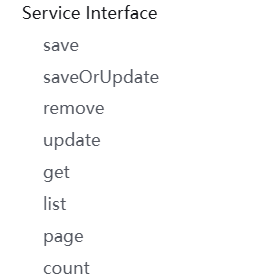
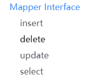
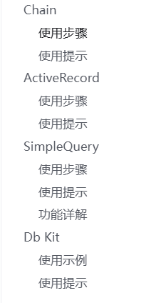
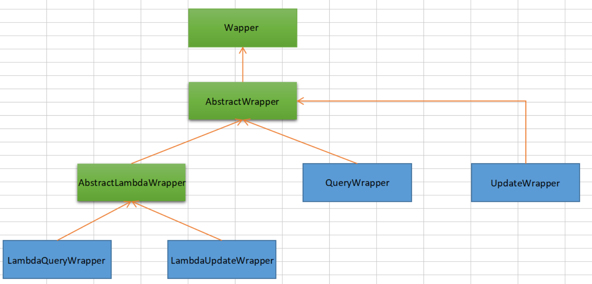
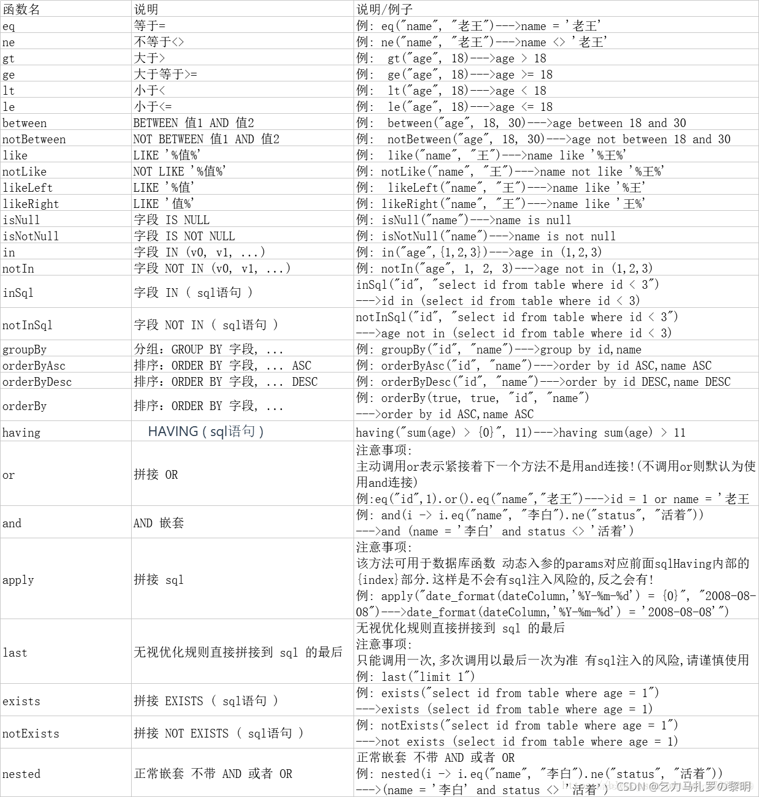

# install
Spring Boot3
maven
<dependency>
<groupId>com.baomidou</groupId>
<artifactId>mybatis-plus-boot-starter</artifactId>
<version>3.5.7</version>
</dependency>
# config
配置 MapperScan 注解
@SpringBootApplication
@MapperScan("com.baomidou.mybatisplus.samples.quickstart.mapper")
public class Application {
public static void main(String[] args) {
SpringApplication.run(Application.class, args);
}
}
yaml 文件配置
server:
port: 8080 # 配置启动端口号
mybatis:
config-location: classpath:mybatis.cfg.xml # mybatis主配置文件所在路径
type-aliases-package: com.demo.drools.entity # 定义所有操作类的别名所在包
mapper-locations: # 所有的mapper映射文件
- classpath:mapper/*.xml
spring: #springboot的配置
datasource: #定义数据源
#127.0.0.1为本机测试的ip，3306是mysql的端口号。serverTimezone是定义时区，照抄就好，mysql高版本需要定义这些东西
#useSSL也是某些高版本mysql需要问有没有用SSL连接
url: jdbc:mysql://127.0.0.1:3306/test?serverTimezone=GMT%2B8&useSSL=FALSE
username: root #数据库用户名，root为管理员
password: 123456 #该数据库用户的密码
# 使用druid数据源
type: com.alibaba.druid.pool.DruidDataSource
# mybatis-plus相关配置
mybatis-plus:
# xml扫描，多个目录用逗号或者分号分隔（告诉 Mapper 所对应的 XML 文件位置）
mapper-locations: classpath:mapper/*.xml
# 以下配置均有默认值,可以不设置
global-config:
db-config:
#主键类型 AUTO:"数据库ID自增" INPUT:"用户输入ID",ID_WORKER:"全局唯一ID (数字类型唯一ID)", UUID:"全局唯一ID UUID";
id-type: auto
#字段策略 IGNORED:"忽略判断" NOT_NULL:"非 NULL 判断") NOT_EMPTY:"非空判断"
field-strategy: NOT_EMPTY
#数据库类型
db-type: MYSQL
configuration:
# 是否开启自动驼峰命名规则映射:从数据库列名到Java属性驼峰命名的类似映射
map-underscore-to-camel-case: true
# 如果查询结果中包含空值的列，则 MyBatis 在映射的时候，不会映射这个字段
call-setters-on-nulls: true
# 这个配置会将执行的sql打印出来，在开发或测试的时候可以用
log-impl: org.apache.ibatis.logging.stdout.StdOutImpl
# 指南
# 持久层接口
# Service Interface
IService 是 MyBatis-Plus 提供的一个通用 Service 层接口，它封装了常见的 CRUD 操作，包括插入、删除、查询和分页等。通过继承 IService 接口，可以快速实现对数据库的基本操作，同时保持代码的简洁性和可维护性。

# Mapper Interface
BaseMapper 是 Mybatis-Plus 提供的一个通用 Mapper 接口，它封装了一系列常用的数据库操作方法，包括增、删、改、查等。通过继承 BaseMapper，开发者可以快速地对数据库进行操作，而无需编写繁琐的 SQL 语句。

# Mapper 层选装件
选装件是 Mybatis-Plus 提供的一些扩展方法，它们位于 com.baomidou.mybatisplus.extension.injector.methods 包下。这些方法需要配合 Sql 注入器使用，以扩展 Mapper 接口的功能。
使用这些选装件前，需要确保已经正确配置了 Sql 注入器。更多使用案例和详细信息，可以参考官方案例和源码注释。
# alwaysUpdateSomeColumnById
功能：这个方法用于在更新操作时，无论实体对象的某些字段是否有变化，都会强制更新这些字段。这在某些业务场景下非常有用，比如更新时间戳字段，确保每次更新操作都会更新该字段。
使用场景：当你需要在每次更新记录时，都更新某些特定的字段（如更新时间、版本号等），即使这些字段在实体对象中没有变化
# insertBatchSomeColumn
功能：这个方法用于批量插入实体对象，但只插入实体对象中指定的某些字段。这在需要批量插入数据，但又不希望插入所有字段时非常有用。
使用场景：当你需要批量插入数据，并且希望只插入实体对象中的部分字段，以提高插入效率或保护敏感数据。
# logicDeleteByIdWithFill
功能：这个方法用于逻辑删除记录，并填充实体对象中的某些字段。逻辑删除意味着不是真正从数据库中删除记录，而是通过更新某个字段（如 deleted 字段）来标记记录已被删除。
使用场景：当你需要实现逻辑删除功能，并且希望在删除操作时自动填充实体对象中的某些字段（如删除时间、删除人等）。
# 其他

# 条件构造器
MyBatis-Plus 提供了一套强大的条件构造器（Wrapper），用于构建复杂的数据库查询条件。Wrapper 类允许开发者以链式调用的方式构造查询条件，无需编写繁琐的 SQL 语句，从而提高开发效率并减少 SQL 注入的风险。
# 条件构造器关系介绍

# 功能详解
allEq
eq
ne
gt // 大于
ge // 大于等于
ly // 小于
le // 小于等于
between
notBetween
like
notLike
likeLeft // 右模糊匹配条件
likeRight
notLikeLeft
notLikeRight
isNull
in
notIn
inSql
notInSql
eqSQL
...
groupBy
orderByAsc
OrderByDesc
orderBy
having
func
or
and
nested // 创建一个独立的查询条件块，不带默认的 AND 或 OR 逻辑
last // 允许你直接在查询的最后添加一个 SQL 片段，而不受 MyBatis-Plus 的查询优化规则影响。
exists // EXISTS 的子查询 不返回具体的数据，只返回所查询数据的行数
select
set // 设置更新语句中的 SET 字段
setSql
setIncrBy // 允许你指定一个字段，并使其在数据库中的值增加指定的数值
setDecrBy
lambda

# 使用提示
通过使用 MyBatis-Plus 的 Wrapper 条件构造器，开发者可以更加高效地构建复杂的数据库查询条件，同时保持代码的简洁性和安全性。以下是一些注意事项与推荐做法：
- 在使用 Wrapper 时，尽量使用 Lambda 表达式来避免硬编码字段名，这样可以提高代码的可读性和可维护性。
- Wrapper 支持链式调用，可以组合多个条件，如
and、or等逻辑操作符。 - 在更新操作中使用 UpdateWrapper 或 LambdaUpdateWrapper 时，可以省略实体对象，直接在 Wrapper 中设置更新字段。
- 注意 Wrapper 的线程安全性，通常在每次使用时创建新的 Wrapper 实例。
- 在使用 MyBatis-Plus 的 Wrapper 时，应避免将前端动态参数直接拼接到 SQL 片段中，以防止 SQL 注入攻击。MyBatis-Plus 提供了安全的参数绑定方式，如使用
eq、apply等方法，它们会自动处理参数绑定，避免 SQL 注入风险。
# 参考
注解配置 | MyBatis-Plus (baomidou.com)
SpringBoot 整合 Mybatis-plus 及用法_springboot 引入 mybatis-plus-CSDN 博客